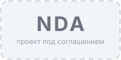
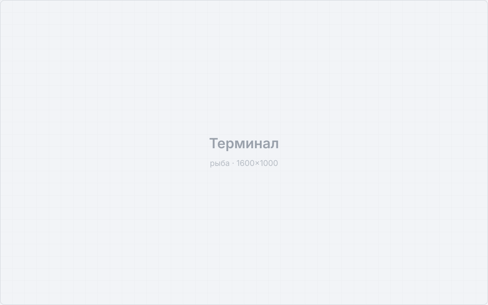
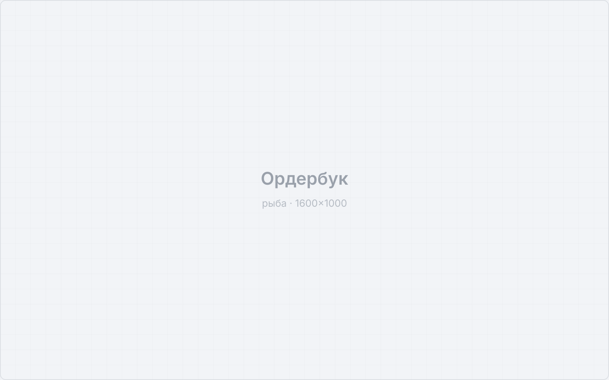
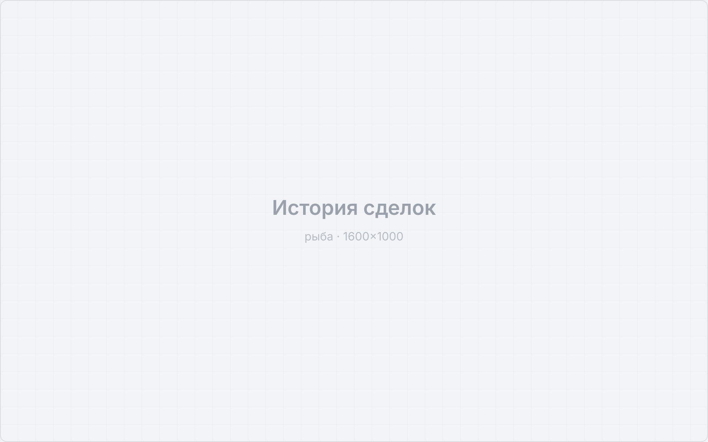
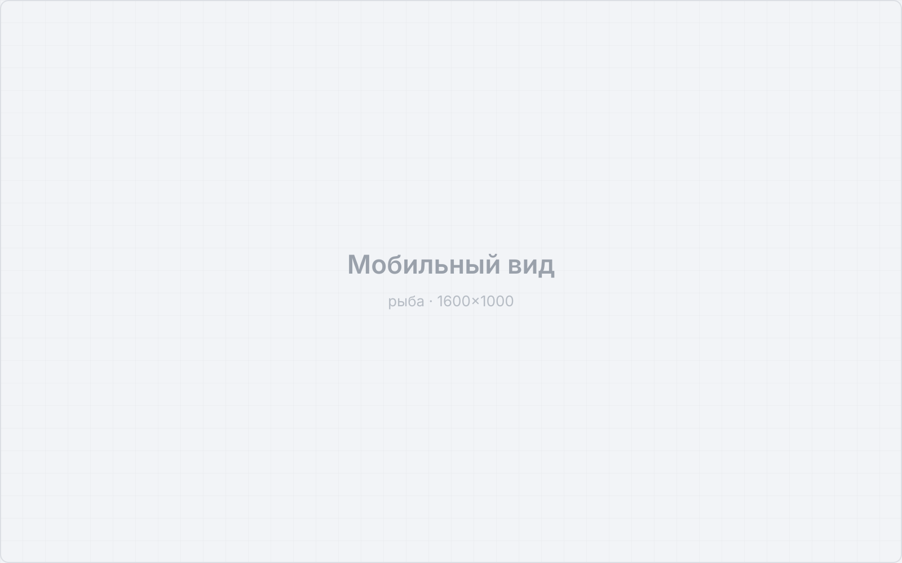

Роль: Product Designer
Discovery • UX Research • UX/UI • Дизайн-система • Delivery

Международная криптовалютная платформа: биржа, кошелек и платежные сервисы. Проект под соглашением о неразглашении, поэтому без названия и с обезличенными экранами. Отвечал за инструменты, которыми трейдер пользуется каждый день.
Заполнить: уточнить базу и период роста, а также свой вклад – какие изменения дали эффект
Пять самостоятельных направлений: от торговых автоматов до развлекательного раздела. Ниже – по каждому отдельно.
Торговые роботы, которые автоматически совершают сделки по настроенным алгоритмам. Спроектировал сценарий настройки бота так, чтобы пользователь понимал логику сетки до запуска и видел, чем рискует.


Уведомления об изменении стоимости актива. Задача – дать быстрый способ поставить условие и не превратить приложение в поток шума.


Раздел выпуска и управления виртуальными картами: криптовалюта тратится как обычные деньги. Проектировал выпуск, лимиты и историю операций.
Раздел вознаграждений с игровой механикой. Развлекательный сценарий внутри финансового продукта – отдельная задача по тону и визуальному языку: азарт не должен подрывать доверие к площадке.
Высоконагруженный раздел: график, ордербук, стакан, история сделок и форма ордера на одном экране. Пересобрал иерархию и плотность так, чтобы профессионал не терял скорость, а новичок не терялся.
Экраны – заглушки. Боевые скриншоты добавим в обезличенном виде.
В финансовых интерфейсах доверие важнее лаконичности. Лишний экран подтверждения снижает конверсию шага, но повышает готовность повторить операцию завтра.